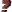

im Titel einer
Schlüsselwortdefinition kennzeichnet, daß dieses Schlüsselwort eine
Erweiterung ist, also nicht zum CQL-Standard gehört.
im Titel einer
Schlüsselwortdefinition kennzeichnet, daß dieses Schlüsselwort eine
Erweiterung ist, also nicht zum CQL-Standard gehört.
Jedes CQL-Skript muß auf oberster Ebene genau eine Suchliste haben. Die Suchliste beinhaltet Schlüsselwortparameter, die die Suche nach Partien kontrollieren. Die Suchliste enhält Null oder mehr Positionslisten. (Der CQL-Standard fordert mindestens eine Positionsliste.) Eine Partie wird nur dann gefiltert (aufgefunden), wenn alle Bedingungen in der Suchliste erfüllt wurden. Wenn Positionslisten existieren, dann muß jede von ihnen mindestens eine Position in der Partile filtern (auffinden), damit die Partie von der Suchliste gefiltert wird. Scidb erlaubt eine zusätzliche Besonderheit: die Suchliste kann logische Schlüsselwörter (:and, :or, :not) mit weiteren Suchlisten enthalten.
Viele Beispiele auf dieser Seite sind nicht konform zum CQL-Standard, denn er fordert mindestens eine enthaltene Positionsliste.
Das Symbol im Titel einer
Schlüsselwortdefinition kennzeichnet, daß dieses Schlüsselwort eine
Erweiterung ist, also nicht zum CQL-Standard gehört.
(und)Erwartet eine Liste von Untersuchlisten und filtert nur dann eine Partie, wenn jede von ihnen diese Partie filtert. Eine Untersuchliste kann keine Positionslisten enthalten.
Beispiel:
(match
:and (
(match :isshufflechess)
(match :ischess960 :not))))Suche nach Shuffle-Schach-Partien, die keine Schach-960-Partien sind. Dieses Beispiel ist identisch zu:
(match :isshufflechess :not (match :ischess960))Scheinbar ist dieses Schlüsselwort entbehrlich, doch es kann innerhalb von :or oder :and benötigt werden.
(nicht)Dieses Schlüsselwort kann in zwei Formen angewandt werden: entweder ist es in einer Suchliste enthalten, oder es hat eine Untersuchliste als Parameter. Im ersten Fall filtert dieses Schlüsselwort, wenn die Suchliste ohne dieses Schlüsselwort nicht filtern würde. Im zweiten Fall: das Resultat der Untersuchliste wird negiert. Die erste Form wurde definiert, um mit dem CQL-Standard des Schlüsselwortes :not der Positionsliste konform zu sein.
Beispiel:
(match :isshufflechess :not)
Suche nach Partien, die nicht mit einer Shuffle-Schach-Position starten. Dieses Beispiel kann auch mit der zweiten Form formuliert werden:
(match :not (match :isshufflechess))
(oder)Erwartet eine Liste von Untersuchlisten und filtert nur dann eine Partie, wenn mindestens eine von ihnen diese Partie filtert. Eine Untersuchliste kann keine Positionslisten enthalten.
Beispiel:
Suche nach Weltmeisterschaftspartien.
(Turnier)Suche nach Partien deren Turnierbezeichnung mit dem gegebenen Muster übereinstimmt.
Als Argument wird entweder ein Suchmuster in doppelten Anführungszeichen, oder eine einfache Zeichenkette erwartet. Siehe :player für eine detaillierte Beschreibung.
(Turnieraustragungsland)
Filtere nur Partien, deren Turnieraustragungsland mit einem der in
der kommaseparierten Liste gegebenen Ländercodes übereinstimmt.
Ein Ländercode ist entweder ein
IOC-Ländercode ,
oder ein ISO 3166-2-Ländercode .
Weiterhin sind die speziellen Ländercodes UNK (IOC-Form) und
xx (ISO 3166-2-Form) erlaubt, die Partien filtern deren
Turnieraustragungsland unbekannt ist.
Der CQL-Editor biete eine Hilfe zur Unterstützung der Eingabe von Ländercodes.
Beispiele:
:eventcountry dk,fi,no,se
Suche nach Partien, die im Skandinavischen Raum gespielt wurden.
:eventcountry xx
Suche nach Partien, deren Turnieraustragungsland nicht bekannt ist.
Siehe auch: :site.
(Turnierdatum)Dies erwartet eine Angabe für den Datumsbereich, im dem das Turnierdatum liegen soll.
Für eine detaillierte Beschreibung des Datumsbereich siehe :date.
(Turniermodus)Filtere nur Partien, deren Turniermodus mit einem der Modi in der gegebenen kommaseparierten Liste übereinstimmt.
Der Turniermodus ist eine der folgenden Modi:
unknown |
Turniermodus ist unbekannt | |
otb |
 |
Am Brett |
corr |
 |
Fernschach |
email |
 |
|
internet |
 |
Internet-Schachservice |
tele |
 |
Telekommunikation |
analysis |
Analyse | |
composition |
 |
Komposition |
Der CQL-Editor biete eine Hilfe zur Unterstützung der Eingabe von Turniermodi.
Beispiel:
:eventmode corr,email
Suche nach Fernpartien, oder nach via Email gespielten Partien.
(Turniertyp)Filtere nur Partien, deren Turniertyp mit einem der in der gegebenen kommaseparierten Liste von Turniertypen übereinstimmt.
Der Turniertyp ist einer der folgenden Typen:
unknown |
Turniertyp ist unbekannt | |
game |
 |
Freie Partie |
match |
 |
Wettkampf |
tourn |
 |
Rundenturnier |
knockout |
 |
K.O.-Turnier |
swiss |
 |
Schweizer System-Turnier |
team |
Mannschaftsturnier | |
schev |
 |
Scheveninger System-Turnier |
simul |
 |
Simultanturnier |
Der CQL-Editor biete eine Hilfe zur Unterstützung der Eingabe von Turniertypen.
Beispiel:
:eventtype tourn,swiss
(Turnierort)Suche nach Partien, deren Turnierort mit dem gegebenen Muster übereinstimmt.
Als Argument wird entweder ein Suchmuster in doppelten Anführungszeichen, oder eine einfache Zeichenkette erwartet. Siehe :player für eine detaillierte Beschreibung.
Siehe auch: :eventcountry.
(Zeitmodus)Suche nach Partien, deren Zeitmodus mit einem der in der gegebenen kommaseparierten Liste von Zeitmodi übereinstimmt.
Der Zeitmodus ist einer der folgenden Modi:
unknown |
Zeitmodus ist unbekannt | |
normal |
Normalschach | |
rapid |
 |
Schnellschach |
blitz |
 |
Blitzschach |
bullet |
 |
Bullet |
corr |
 |
Fernschach |
Der CQL-Editor biete eine Hilfe zur Unterstützung der Eingabe von Zeitmodi.
Beispiel:
:timemode blitz,bullet
Suche nach Blitz- bzw. Bullet-Partien.
(Geburtsjahr)Suche nach Partien, in denen einer der Spieler innerhalb der gegebenen Bereichsangabe geboren wurde.
Beispiel:
:birthyear 1990 unlimited
Suche nach Partien mit mindestens einem jüngeren Spieler, geboren 1990 oder später.
Siehe auch: :whitebirthyear, :blackbirthyear, :deathyear.
(Geburtsjahr - schwarzer Spieler)Suche nach Partien, in denen der schwarze Spieler innerhalb der gegebenen Bereichsangabe geboren wurde.
Siehe auch: :whitebirthyear, :birthyear, :blackdeathyear, :whitedeathyear, :deathyear.
(Land - schwarzer Spieler)
Filtere nur Partien, in denen die Nationalität des schwarzen Spielers mit einem
der Ländercodes in der gegebenen kommaseparierten Liste von Ländercodes
übereinstimmt.
Ein Ländercode ist entweder ein
IOC-Ländercode ,
oder ein ISO 3166-2-Ländercode .
Weiterhin sind die speziellen Ländercodes UNK (IOC-Form) und
xx (ISO 3166-2-Form) erlaubt, die Partien filtern, in denen die
Nationalität des schwarzen Spielers unbekannt ist.
Der CQL-Editor biete eine Hilfe zur Unterstützung der Eingabe von Ländercodes.
Für Beispiele siehe :country.
Siehe auch: :country, :whitecountry.
(Todesjahr - schwarzer Spieler)Suche nach Partien, in denen der schwarze Spieler innnerhalb der gegebenen Bereichsangabe verstarb.
Siehe auch: :whitedeathyear, :deathyear, :blackbirthyear, :whitebirthyear, :birthyear.
(ELO - schwarzer Spieler)Dieses Schlüsselwort erwartet eine Bereichsangabe; die ELO des schwarzen Spielers muß innerhalb dieses Bereichs liegen.
Siehe auch: :whiteelo, :elo, :blackrating.
(Geschlecht - schwarzer Spieler)
Filtere nur Partien, in denen das Geschlecht des schwarzer Spielers mit dem
gegebenen Geschlecht übereinstimmt. Die Geschlechtsangabe ist: f
(feminin), m (maskulin, männlich), oder x (unbekannt).
Anstatt f (feminin) kann auch w (weiblich) verwendet
werden.
Beispiel:
:blackgender f
Suche nur nach Partien mit mindestens einem weiblichen Spieler.
:blackgender x
Suche nach Partien, in denen bei einem Spieler das Geschlecht nicht bekannt ist.
Siehe auch: :whitegender, :gender.
(Computer? - schwarzer Spieler)Suche nach Partien, in denen der schwarze Spieler ein Schachcomputer ist.
Siehe auch: :iscomputer, :whiteiscomputer.
(Menschlich? - schwarzer Spieler)Suche nach Partien, in denen der schwarze Spieler ein Mensch ist.
Siehe auch: :ishuman, :whiteishuman.
(Schwarzer Spieler)Suche nach Partien, in denen der schwarze Spielername mit dem gegebenen Muster übereinstimmt.
Als Argument wird entweder ein Suchmuster in doppelten Anführungszeichen, oder eine einfache Zeichenkette erwartet. Siehe :player für eine detaillierte Beschreibung.
Siehe auch: :player, :whiteplayer.
(Wertungszahl - schwarzer Spieler)Suche nur nach Partien, in denen die Wertungszahl des schwarzen Spielers für den gegebenen Wertungstyp innerhalb der gegebenen Bereichsangabe liegt. Der erste Parameter ist der Wertungstyp, dann folgt der Wertebereich. Für eine detaillierte Beschreibung siehe :rating.
Siehe auch: :whiterating, :rating.
(Titel - schwarzer Spieler)Suche nur nach Partien, in denen der Titel des schwarzen Spielers mit einem in der gegebenen kommaseparierten Liste von Titeln übereinstimmt. Siehe :title für eine detailliertere Beschreibung.
Siehe auch: :whitetitle, :title.
(Land)
Filtere nur Partien, in denen die Nationalität eines Spielers mit einem
der Ländercodes in der gegebenen kommaseparierten Liste von Ländercodes
übereinstimmt.
Ein Ländercode ist entweder ein
IOC-Ländercode ,
oder ein ISO 3166-2-Ländercode .
Weiterhin sind die speziellen Ländercodes UNK (IOC-Form) und
xx (ISO 3166-2-Form) erlaubt, die Partien filtern, in denen
die Nationalität einer der Spieler unbekannt ist.
Der CQL-Editor biete eine Hilfe zur Unterstützung der Eingabe von Ländercodes.
Beispiele:
:country GER
:country de
In beiden Beispielen werden nur Partien gefiltert, in denen einer der Spieler eine deutsche Nationalität besitzt.
Siehe auch: :whitecountry, :blackcountry.
(Todesjahr)Suche nach Partien, in denen einer der Spieler innnerhalb der gegebenen Bereichsangabe verstarb.
Beispiel:
:deathyear 1800 1950
Suche nach Partien mit Spielern aus alter Zeit, mindestens einer der Spieler vestarb zwischen 1800 und 1950.
Siehe auch: :whitedeathyear, :blackdeathyear, :whitebirthyear, :blackbirthyear, :birthyear.
Dieses Schlüsselwort erwartet eine Bereichsangabe; die ELO von mindestens einem Spieler muß innerhalb dieses Bereichs liegen.
Siehe auch: :whiteelo, :blackelo, :rating.
(Geschlecht)
Filtere nur Partien, in denen das Geschlecht einer der Spieler mit dem
gegebenen Geschlecht übereinstimmt. Die Geschlechtsangabe ist: f
(feminin), m (maskulin, männlich), oder x (unbekannt).
Anstatt f (feminin) kann auch w (weiblich) verwendet
werden.
Für Beispiele siehe :blackgender.
Siehe auch: :blackgender, :whitegender.
(Computer?)Suche nach Partien, in denen einer der Spieler ein Schachcomputer ist.
Siehe auch: :whiteiscomputer, :blackiscomputer.
(Ein Mensch?)Suche nach Partien, in denen einer der Spieler ein Mensch ist.
Siehe auch: :whiteishuman, :blackishuman.
Suche nach Partien, in denen der schwarze Spielername mit dem gegebenen Argument übereinstimmt: entweder ein Suchmuster in doppelten Anführungszeichen, oder eine einfache Zeichenkette.
Einfache Zeichenkette: Nur Partien, in denen mindestens einer der Spielernamen eine Teilzeichenkette des Parameters ist, werden gefiltert. Der Zeichenkettenvergleich ist unabhängig von Groß- und Kleinschreibung. Diese Form entspricht dem CQL-Standard.
Beispiel:
:player coeff
Filtere nur Partien, in denen einer der Spielernamen eine Teilzeichenkette "coeff" enthält.
Suchmuster in doppelten Anführungszeichen: Nur Partien, in denen mindestens einer der Spielernamen durch das Suchmuster ersetzt werden kann, werden aufgefunden. Für eine Beschreibung der Suchmuster siehe Suchmusterabgleich.
 Die Form mit den Suchmustern in doppelten Anführungszeichen entspricht
nicht dem CQL-Standard.
Die Form mit den Suchmustern in doppelten Anführungszeichen entspricht
nicht dem CQL-Standard.
Beispiele:
:player "*coeff*"
Dies ist identisch zum vorigen Beispiel (ohne Anführungszeichen).
Für weitere Beispiele siehe Suchmusterabgleich.
Siehe auch: :whiteplayer, :blackplayer.
(Wertungszahl)Suche nur nach Partien, in denen die Wertungszahl einer der Spielers für den gegebenen Wertungstyp innerhalb der gegebenen Bereichsangabe liegt. Der erste Parameter ist der Wertungstyp, dann folgt der Wertebereich.
Der Wertungstyp ist einer der folgenden Typen:
ELO |
FIDE Rating |
DWZ |
Deutsche Wertungszahl |
ECF |
Englischer Schachverband |
Rapid |
Schnellturnierwertung des englischen Schachvernbands |
ICCF |
Internationaler Fernschachverband |
USCF |
Schachverband der USA |
IPS |
Schach-960-Wertung (Individual Player Strength) |
Rating |
Jeder andere Wertungstyp |
Beispiel:
:rating ELO 2000 3000
Filtere nur Partien, in denen einer der Spieler eine ELO-Wertung zwischen 2000 und 3000 besitzt.
Siehe auch: :whiterating, :blackrating.
(Titel)Suche nur nach Partien, in denen der Titel einer der Spieler mit einem in der gegebenen kommaseparierten Liste von Titeln übereinstimmt. Ein Titel ist einer der folgenden:
None | Kein Titel |
GM | Großmeister (FIDE) |
IM | Internationaler Meister (FIDE) |
FM | Fidemeister (FIDE) |
CM | Meisterkandidat (FIDE) |
WGM | Frauen - Großmeisterin (FIDE) |
WIM | Frauen - Internationale Meisterin (FIDE) |
WFM | Frauen - Fidemeisterin (FIDE) |
WCM | Frauen - Meisterkandidatin (FIDE) |
HGM | Ehrengroßmeister (FIDE) |
CGM | Fernschach-Großmeister (ICCF) |
CIM | Internationaler Fernschachmeister (ICCF) |
CLGM | Frauen - Fernschachgroßmeisterin (ICCF) |
CILM | Frauen - Internationale Fernschachmeisterin (ICCF) |
CSIM | Verdienter Internationaler Fernschachmeister (ICCF) |
Beispiele:
:title GM,IM
Suche nur nach Partien mit mindestens einem GM oder IM.
:title None
Suche nur nach Partien, in denen keiner der Spieler einen Titel besitzt.
(Geburtsjahr - weißer Spieler)Suche nach Partien, in denen der weiße Spieler innerhalb der gegebenen Bereichsangabe geboren wurde.
Siehe auch: :blackbirthyear, :birthyear, :whitedeathyear, :blackdeathyear, :deathyear.
(Land - weißer Spieler)
Filtere nur Partien, in denen die Nationalität des weißen Spielers mit einem
der Ländercodes in der gegebenen kommaseparierten Liste von Ländercodes
übereinstimmt.
Ein Ländercode ist entweder ein
IOC-Ländercode ,
oder ein ISO 3166-2-Ländercode .
Weiterhin sind die speziellen Ländercodes UNK (IOC-Form) und
xx (ISO 3166-2-Form) erlaubt, die Partien filtern, in denen die
Nationalität des weißen Spielers unbekannt ist.
Der CQL-Editor biete eine Hilfe zur Unterstützung der Eingabe von Ländercodes.
Für Beispiele siehe :country.
Siehe auch: :blackcountry, :country.
(Todesjahr - weißer Spieler)Suche nach Partien, in denen der weiße Spieler innnerhalb der gegebenen Bereichsangabe verstarb.
Siehe auch: :blackdeathyear, :deathyear, :whitebirthyear, :blackbirthyear, :birthyear.
(ELO - weißer Spieler)Dieses Schlüsselwort erwartet eine Bereichsangabe; die ELO des weißen Spielers muß innerhalb dieses Bereichs liegen.
Siehe auch: :blackelo, :elo, :whiterating.
(Geschlecht - weißer Spieler)
Filtere nur Partien, in denen das Geschlecht des weißen Spielers mit dem
gegebenen Geschlecht übereinstimmt. Die Geschlechtsangabe ist: f
(feminin), m (maskulin, männlich), oder x (unbekannt).
Anstatt f (feminin) kann auch w (weiblich) verwendet
werden.
Für Beispiele siehe :blackgender.
Siehe auch: :blackgender, :gender.
(Computer? - weißer Spieler)Suche nach Partien, in denen der weiße Spieler ein Schachcomputer ist.
Siehe auch: :iscomputer, :blackiscomputer.
(Menschlich? - weißer Spieler)Suche nach Partien, in denen der weiße Spieler ein Mensch ist.
Siehe auch: :ishuman, :blackishuman.
(Weißer Spieler)Suche nach Partien, in denen der weiße Spielername mit dem gegebenen Muster übereinstimmt.
Ein Argument wird entweder ein Suchmuster in doppelten Anführungszeichen, oder eine einfache Zeichenkette erwartet. Siehe :player für eine detaillierte Beschreibung.
Siehe auch: :blackplayer, :player.
(Wertungszahl - weißer Spieler)Suche nur nach Partien, in denen die Wertungszahl des weißen Spielers für den gegebenen Wertungstyp innerhalb der gegebenen Bereichsangabe liegt. Der erste Parameter ist der Wertungstyp, dann folgt der Wertebereich. Für eine detaillierte Beschreibung siehe :rating.
Siehe auch: :blackrating, :rating.
(Titel - weißer Spieler)Suche nur nach Partien, in denen der Titel des weißen Spielers mit einem in der gegebenen kommaseparierten Liste von Titeln übereinstimmt. Siehe :title für eine detailliertere Beschreibung.
Siehe auch: :blacktitle, :title.
| • | :annotator |
| • | :date |
| • | :eco |
| • | :gamenumber |
| • | :hasmarkers |
| • | :hasspecialmarkers |
| • | :plycount |
| • | :result |
| • | :termination |
| • | :variant |
| • | :year |
(Kommentator)Suche nach Partien, in denen der Kommentatorname mit dem gegebenen Suchmuster übereinstimmt.
Als Argument wird entweder ein Suchmuster in doppelten Anführungszeichen, oder eine einfache Zeichenkette erwartet. Siehe :player für eine detaillierte Beschreibung.
Beispiele:
:annotator Capablanca
:annotator "*"
Suche nach Partien mit einem Kommentator, d.h. daß Partien ohne Kommentator werden ausgefiltert.
Siehe auch: :hascomments.
(Partiedatum)Ein Datumsbereich wird als Parameter erwartet, mit dem nur Partien gefiltert werden, deren Partiedatum innerhalb dieses Bereichs liegt.
Der Datumsbereich muß einer der folgenden Syntaxformen genügen:
2010-10-27 |
bezeichnet ein einzelnes Datum |
2010-10-01 2010-10-31 |
bezeichnet einen Datumsbereich, inklusive der Schranken |
2010-10-01 .. 2010-11-01 |
bezeichnet einen Datumsbereich, inklusive der linken Schranke, aber exklusive der rechten Schranke |
In der dritten Syntaxform ist es nicht erforderlich, daß die linke
Schranke kleiner ist als die rechte Schranke. Der leere Datumsbereich
(z.B. 2010-10-01 .. 2010-10-01)
ist nicht erlaubt.
Ein Datum hat die folgende Form:
<jahr>'−'<monat>'−'<tag>(<signum><zahl>'y')?(<signum><zahl>'m')?(<signum><zahl>'d')?
<jahr> |
bezeichnet das Jahr (vierstellig) |
<monat> |
bezeichnet den Monat (zweistellig) |
<tag> |
bezeichnet den Tag des Monats (zweistellig) |
<signum> |
ist entweder '−' oder '+' |
<zahl> |
ist eine positive Zahl, und bezeichnet ein Inkrement oder ein Dekrement |
d |
der Tag wird inkrementiert/dekrementiert |
m |
der Monat wird inkrementiert/dekrementiert |
y |
das Jahr wird inkrementiert/dekrementiert |
Es ist zudem das spezielle Datum "unlimited" erlaubt - siehe Bereichsangabe für eine Beschreibung - jedoch nicht als rechte Schranke in der dritten Form.
Beispiele:
:date 2010-10-01
Suche nach allen Partien gespielt am 1. Oktober 2010.
:date 2010-10-01 unlimited
Suche nach allen Partien gespielt nach dem 30. September 2010.
:date 2010-10-01 .. 2010-11-01
Suche nach allen Partien gespielt im Oktober 2010: zwischen dem 1. Oktober 2010 (inklusive) und 1. November 2010 (exklusive).
:date 2010-10-01 .. 2010-10-01+1m
Suche ebenfalls nach allen Partien gespielt im Oktober 2010; die
rechte Datumsangabe (2010-10-01+1m ist der
1. November 2010) ist ausgeschlossen.
+1m bezeichnet das Inkrement für den Monat.
:date 2010-10-27 .. 2010-10-27-43d
Suche nach allen Partien gespielt zwischen dem 14. September 2010
(exklusive; 2010-10-27-43d ist der 14. September 2010) und
dem 27. Oktober 2010 (inklusive). Dies ist ein Beispiel für den folgenden
Fall: wir wissen daß das Turnier am 27.10.2010 endete, und die
Turnierdauer war exakt 43 Tage. Dieses Beispiel stellt noch einmal heraus,
daß die linke Datumsschranke größer sein darf als die rechte Datumsschranke.
:date unlimited :not
Suche nach Partien, die kein Partiedatum haben.
Siehe auch: :year.
Erwartet eine ECO-Code-Bereich, und filtert nur Partien mit einem ECO-Code, der in diesem Bereich liegt. Der Bereich kann auch aus einem einzelnem ECO-Code bestehen.
Beispiele:
:eco A00
Suche nur nach Partien mit ECO-Code A00.
:eco A00 A99
Suche nur nach Partien mit einem ECO-Code zwischen A00 und A99 (inklusive der Schranken).
Erwartet eine Bereichsangabe, und filtert nur die Partien, deren Nummer in der Datenbank innerhalb des gegebenen Bereichs liegt.
Beachte daß im Falle von PGN-Datenbanken eine Partienummer mehrmals vorkommen kann, nämlich in verschiedenen Schachformen. Evt. ist die Suche mit dem Schlüsselwort :variant einzuschränken.
Beispiele:
:gamenumber 1000
:gamenumber 1 100
(Partiemarkierung?)Suche nach Partien, in denen mindestens eine Partiemarkierung (⇒ Partiemarkierungen) gesetzt ist, die in der gegebenen Zeichenkette mit ihrem Kürzel aufgeführt wird. Wenn kein Parameter vorhanden ist so wird nach Partien gesucht, in denen irgendeine Partiemarkierung gesetzt wurde.
Die Kürzel für Partiemarkierungen sind:
| w |  |
Weiße Eröffnung |
| b |  |
Schwarze Eröffnung |
| m |  |
Mittelspiel |
| e |  |
Endspiel |
| N |  |
Neuerung |
| p |  |
Bauernstruktur |
| T |  |
Taktik |
| K |  |
Königsseite |
| Q |  |
Damenseite |
| ! |  |
Brillianz |
| ? |  | Schnitzer |
| U |  |
User |
| * |  |
Beste Partie |
| D |  |
Entscheidungsturnier |
| G |  |
Modellpartie |
| S |  |
Strategie |
| ^ |  |
Angriff |
| ~ |  |
Opferspiel |
| = |  |
Verteidigung |
| M |  |
Material |
| P |  |
Figurenspiel |
Der CQL-Editor biete eine Hilfe zur Unterstützung der Eingabe von Partiemarkierungen.
Beispiele:
:hasmarkers wb
Suche nach Partien mit den Markierung Weiße Eröffnung oder Schwarze Eröffnung (oder beiden).
:hasmarkers
Suche nach Partien, in denen irgendeine Markierung gesetzt wurde; d.h. alle Partien ohne eine Markierung sind ausgeschlossen.
(Spezielle Partiemarkierung?)Suche nach Partien, in denen mindestens eine der speziellen Markierungen gesetzt ist, die in der gegebenen kommaseparierten Liste aufgeführt sind.
Eine spezielle Markierung wird folgendermaßen spezifiziert:
deleted |
 |
Die Partie ist markiert zum Löschen. |
changed |
 |
Die Partie wurde in dieser Sitzung verändert. |
added |
 |
Die Partie wurde in dieser Sitzung hinzugefügt. |
illegalmove |
 |
Die Partie enthält unerlaubte Züge. |
illegalcastling |
 |
Die Partie enthält unerlaubte Rochaden. |
Beachte das illegalmove keine unerlaubten Rochaden beinhaltet.
Der CQL-Editor biete eine Hilfe zur Unterstützung der Eingabe von
speziellen Markierungen.
Beispiel:
:not (match :hasspecialmarkers illegalmove)
Suche nach Partien ohne unerlaubte Züge, unerlaubte Rochaden sind jedoch zulässig.
(Halbzugzähler)Suche nach Partien, deren Halbzugzahl innerhalb der gegebenen Bereichsangabe liegt.
Beispiel:
:plycount 40 60
Dies findet kurze Partien auf, mit nicht weniger als 20, und nicht mehr als 30 Züge.
Suche nach Partien, deren Ergebnis mit einem in der gegebenen kommaseparierten Liste von Ergebnissen übereinstimmt.
Der CQL-Standard erlaubt nur ein einziges Ergebnis als Parameter.
Erlaubte Ergebnisse sind:
1/2 |
Remis |
1-0 |
Weiß gewinnt |
0-1 |
Schwarz gewinnt |
0-0 |
Für beide Partien verloren (nicht Bestandteil des CQL-Standards) |
* |
Ergebnis ist nicht bekannt (nicht Bestandteil des CQL-Standards) |
Das Ergebnis 1/2 kann mit 1/2-1/2 ausgeschrieben werden.
Beispiele:
:result 1/2
Finde alle Remispartien.
:result 1-0,0-1
Finde nur Partien, in denen eine Seite gewann. Dieses Beispiel ist nicht konform zum CQL-Standard.
(Beendigung)Filtere nur Partien, in denen die Beendigungsursache mit einer der in der gegebenen kommaseparierten Liste von Ursachen übereinstimmt.
Erlaubte Beendigungsursachen sind:
unknown |
Die Beendigungsursache ist nicht bekannt | |
normal |
 |
Die Partie endete auf normale Weise |
unplayed |
Die Partie wurde nicht gespielt | |
abandoned |
Die Partie wurde abgebrochen | |
adjudication |
 |
Abschätzung |
disconnection |
 |
Leitungsunterbrechung |
emergency |
 |
Aufgrund eines Ereignisses unvollendet |
rulesinfraction |
 |
Entschieden aufgrund einer Regelübertretung |
timeforfeit |
 |
Ein Spieler, oder sogar beide, überschritten die Zeit |
unterminated |
Unvollendet |
Beispiel:
:termination unknown,normal
Suche nur nach Partien, von denen bekannt ist, daß sie nicht in einer unnormalen Weise beendet wurden.
(Schachform)Suche nur nach Partien deren Schachform mit einer der Schachformen in der gegebenen kommaseparierten Liste übereinstimmt.
Erlaubte Schachformen sind:
normal |
Normalschach |
threecheck |
Dreimal-Schach |
crazyhouse |
Crazyhouse |
suicide |
Suicide |
giveaway |
Giveaway |
losers |
Losers |
Beispiel:
:variant suicide,giveaway,losers
Schränke die Suche auf Schlagschachpartien ein.
Erwartet eine Bereichsangabe und filtert nur Partien, deren Jahr des Partiedatums innerhalb des gegebenen Bereichs liegt.
Beispiele:
:year 2000
:year 2000 2010
Siehe auch: :date.
| • | :comment |
| • | :hasannotation |
| • | :hascomments |
| • | :hasvariations |
| • | :ischess960 |
| • | :isshufflechess |
| • | :startposition |
(Kommentar)Filtere nur Partien, in denen mindestens ein Kommentar eine Teilzeichenkette enthält, die vom gegebenen Suchmuster ersetzt werden kann (⇒ Suchmusterabgleich). Das Suchmuster muß in doppelten Anführungszeichen eingeschlossen sein.
Beispiel:
:comment "entscheidungspartie"
Dies findet beispielsweise eine Partie auf, die als Kommentierung den Satz "Diese Entscheidungspartie begann mit einer Überraschung." enthält.
(Anmerkung?)Suche nach Partien mit Anmerkungen (dies sind nicht Kommentare).
Siehe auch: :hascomments, :hasvariations.
(Kommentar?)Suche nach kommentierten Partien. Beachte das eine kommentierte Partie keinen Kommentator (⇒ :annotator) haben muß.
Siehe auch: :hasannotation, :hasvariations. (Varianten?)Suche nach Partien mit Untervarianten.
Siehe auch: :hasannotation, :hascomments.
(Schach-960?)Suche nach Partien beginnend mit einer Schach-960-Position. Dies beinhaltet die Standardstartposition.
Siehe auch: :isshufflechess.
(Shuffle-Schach?)Suche nach Partien beginnend mit einer Schuffle-Schach-Position. Dies beinhaltet Schach-960-Positionen.
Siehe auch: :ischess960.
Erwartet eine kommaseparierte Liste von Startpositionen. Eine Startposition ist entweder eine Positionsnummer, oder eine FICS-Variantenbezeichnung.
Im Falle der Positionsnummer Null werden nur Partien gefiltert, die nicht mit einer Shuffle-Schach-Positionen beginnen. Eine Positionsnummer zwischen 1 und 3840 bezeichnet eine Shuffle-Schach-Position. Ist die Nummer kleiner oder gleich 960 (aber nicht Null), dann ist es eine Schach-960-Positionsnummer. Eine spezielle Bedeutung hat die Nummer -1: diese Nummer schliesst alle Shuffle-Schach-Positionen und alle (unterstützten) FICS-Varianten aus.
Die Shuffle-Schach-Positionsnummer ist von der Schach-960-Positionsnummer in der folgenden Weise abgeleitet:
Für die Schachformen Suicide und
Giveaway gilt eine spezielle Regel:
hier ist die Positionsnummer N equivalent zur Positionsnummer
N−3×960, wenn N > 3×960.
Dies vereinfacht die Suche nach Standardpositionen; siehe untenstehendes
Beispiel. Beachte das eine Startposition in diesen Schachformen keine
Positionsnummer haben kann, die kleiner oder gleich 960 ist.
Es ist auch möglich eine FICS-Variantenbezeichnung für die Startposition anzugeben. Unterstützte Positionen sind:
misc/bishops-only |
|
endings/kbbk |
misc/knights-only |
|
endings/kbnk |
misc/little-game |
|
pawns/pawns-only |
misc/no-queens |
|
pawns/wild-five |
misc/pawns-only |
|
wild/5 |
misc/pyramid |
|
wild/7 |
misc/queen-rooks |
|
wild/8 |
misc/queens-only |
|
wild/19 |
misc/rooks-only |
|
|
misc/runaway |
|
|
Beispiele:
:startposition 518
Suche nach Partien beginnend mit einer Standardstartposition. Im Falle der Schachformen Suicide und Giveaway findet dies auch Startpositionen mit der Nummer 3398 (dies ist die Standardstartposition von Suicide- und Giveaway-Partien).
:startposition 518,3398
Suche nach Partien beginnend mit einer Standardstartposition, mit oder ohne Rochaderechte. Hier wird auch in der Normalschachform die Startpositionen 3398 aufgefunden, im Unterschied zum vorigen Beispiel.
:startposition misc/runaway
Suche nach Partien der FICS-Variante misc/runaway.
:startposition 0 :not
Suche nach Partien beginnend mit einer beliebigen Startposition: dies bedeutet das die erste Position dieser Partien eine Schuffle-Schach-Position sein muß.
:startposition -1 :not
Suche nach Partien beginnend mit irgendeiner unterstützen Startposition: dies bedeuetet das die erste Position dieser Partien entweder eine Schuffle-Schach-Position ist, oder eine der unterstützen FICS-Varianten.
Erwartet zwei Parameter, einen Markierungsnamen und einen Figurenartbezeichner. Diese Funktionalität wird auf der Seite Tagging beschrieben.
Erwartet einen Parameter, der einen Dateinamen bezeichnet.
Dieses Schlüsselwort wird unterstützt um kompatibel mit dem CQL-Standard zu sein, es hat jedoch keinerlei Bedeutung in Scidb.
Erwartet einen Parameter, der einen Dateinamen bezeichnet.
Dieses Schlüsselwort wird unterstützt um kompatibel mit dem CQL-Standard zu sein, es hat jedoch keinerlei Bedeutung in Scidb.